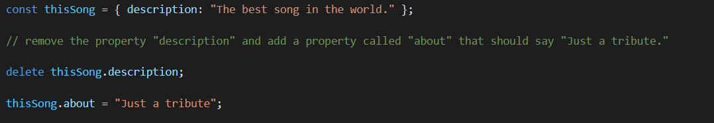

Objects
The Object class represents one of JavaScript's data types. It is used to store various keyed collections and more complex entities. Objects are created by first initializing a variable or constant with cirly braces after the '=' sign. They work based on key:value pairs. Properties of objects are added as keys with some sort of value. To access them we only have to specify the name of the object and key and we will get returned the corresponding value. As you can see in the image we have too types of notation for accessing properties of an object square or dot. Their types are also diffrent depending on the value type which is saved within it. Typicallly objects inherit properties (including methods) from Object.prototype.

Properties can be added or removed dynamically as well. By using object.nameOfNewProperty syntax we can add them dynamically or remove them by using the delete keyword and stating which property to remove.
